Education · Planning and operations · 2022 to 2023
Education programs, planned and run
Planned and ran sixteen resident courses over seventeen months at an urban regeneration center; decks built for the residents’ cooperative won a grand prize and a national excellence award.
- Where
- Urban regeneration support center, Seo-gu, Incheon (2022 to 2023). Vocational Lyceum No. 94, Bishkek (2017). UnivExpo Seoul (2016)
- Period
- 2022 to 2023; earlier volunteer and campus programs 2016 to 2017
- Role
- Planning and operations; co-instructor; publicity
- Deliverables
- Sixteen resident courses with their surveys and reports; newsletters, posters and banners; contest decks; five months of classes and the team film in Bishkek; an expo program
- Recognition
- Grand prize (Incheon Urban Regeneration Contest) and excellence award (national best-practice competition), won by the residents’ cooperative with decks I built (2022). Top prize for the team film (2018). Best program award (2016)
The sixteen courses
| Period | Course | My part |
|---|---|---|
| Mar to Jul 2022 | Urban regeneration college, including a vegan cooking class for children | Facilitator; instructor sourcing |
| Apr to Aug 2022 | Coding basics | Operations; co-instructor; satisfaction survey and result report |
| Apr to Jun 2022 | Village barista, resident capacity course | Equipment and instructor quotes, recruiting posters and banners; co-instructor |
| Jun 2022 | Photoshop basics | Operations; co-instructor |
| Jun 2022 | Interior film application | Operations and completion ceremony |
| Jul to Sep 2022 | Cooking class with books | Operations |
| Aug to Oct 2022 | Blog marketing | Planning, class materials, operations |
| Aug 2022 | Baking | Recruiting posters and banners, applications |
| Sep to Dec 2022 | Upcycling creative course | Participant selection, operations, exhibition |
| Dec 2022 to Jan 2023 | Village café barista, beginner class | Operations |
| Feb 2023 | Social economy capacity building for the village management cooperative | Operations |
| Mar to Apr 2023 | Elder-care program capacity building | Recruiting, operations |
| Apr to May 2023 | Village publicity specialist | Recruiting, operations, survey and result report |
| Apr 2023 | Disinfection specialist | Operations |
| Apr 2023 | Café start-up | Recruiting, operations |
| Jun 2023 | Community child-care program | Recruiting notice, schedule, operations |
Seo-gu, 2022 to 2023
For seventeen months I was the field coordinator at an urban regeneration support center. I planned and ran sixteen courses for residents, from an urban regeneration college to coding, Photoshop, barista training, baking, upcycling, social economy, elder care and café start-up. Depending on the course I sourced the instructor, recruited the learners, ran the satisfaction survey and wrote the result report. In the coding, Photoshop and barista courses I also taught alongside the instructor.
- Monthly village newsletter; posters and banners for every course
- Resident grant program: application support, scoring, consulting, settlement review
- Community festival and study trips; introduction deck for the center; photographic record for the white paper
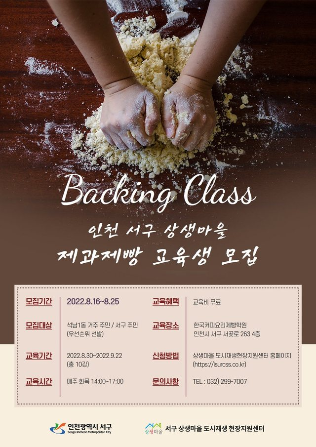
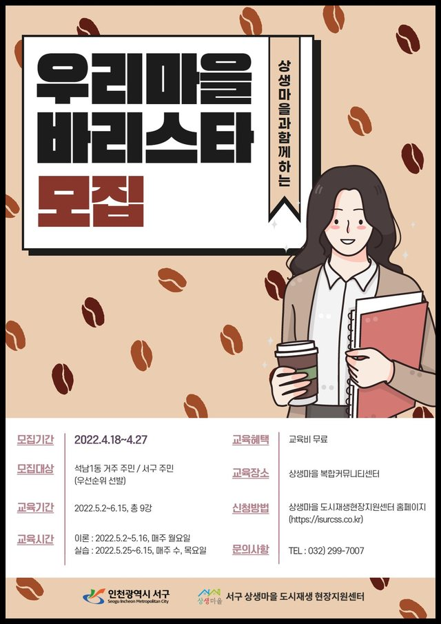
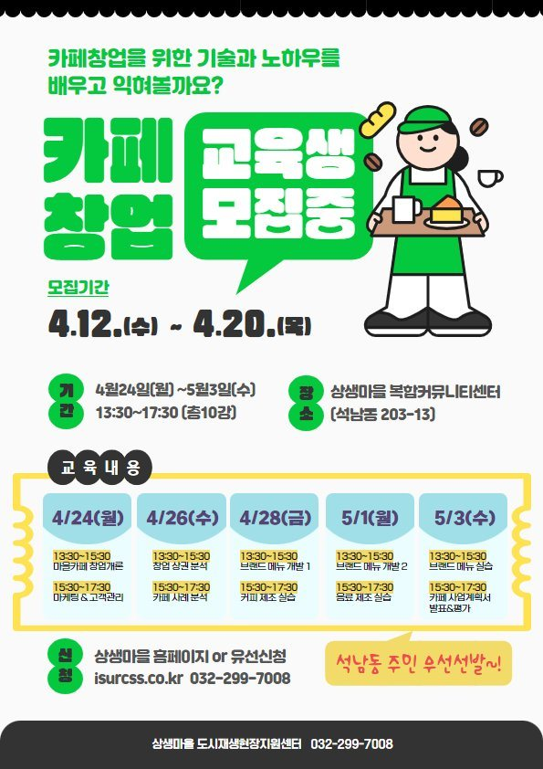
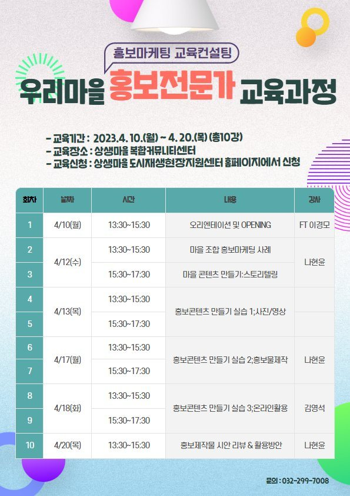
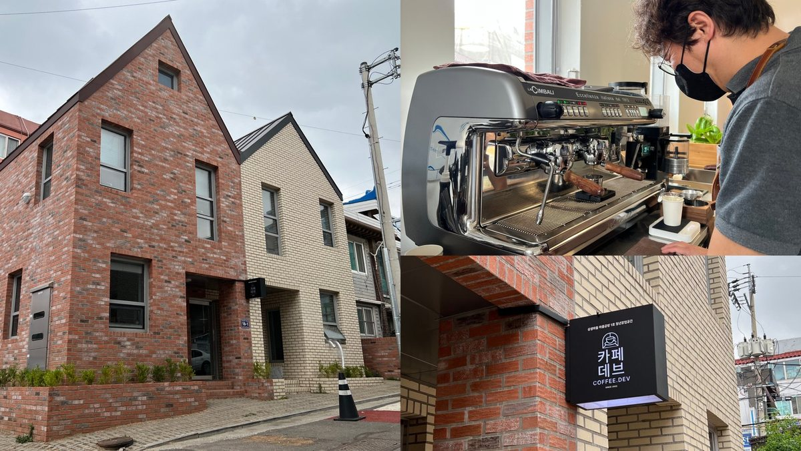
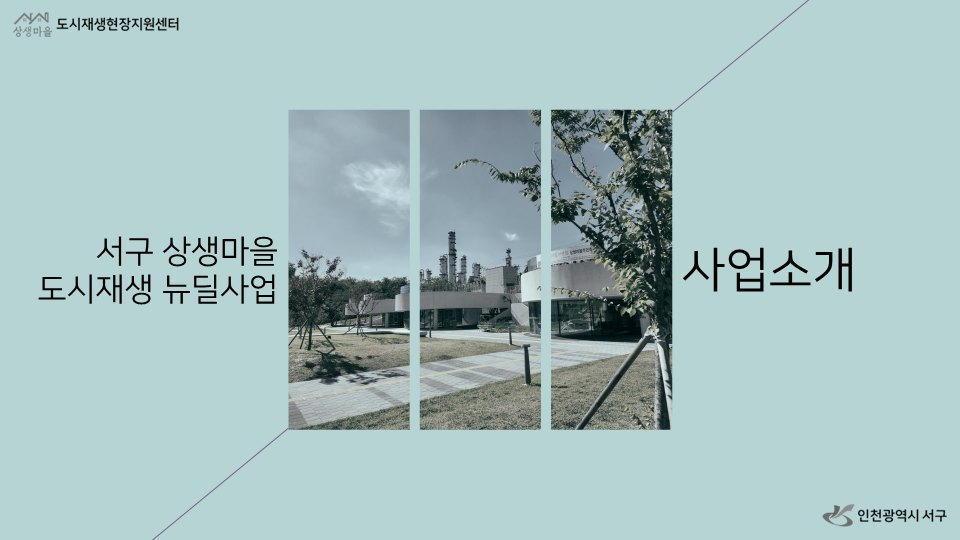
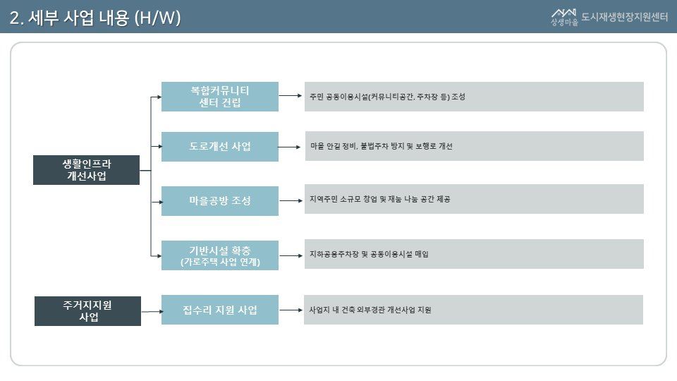
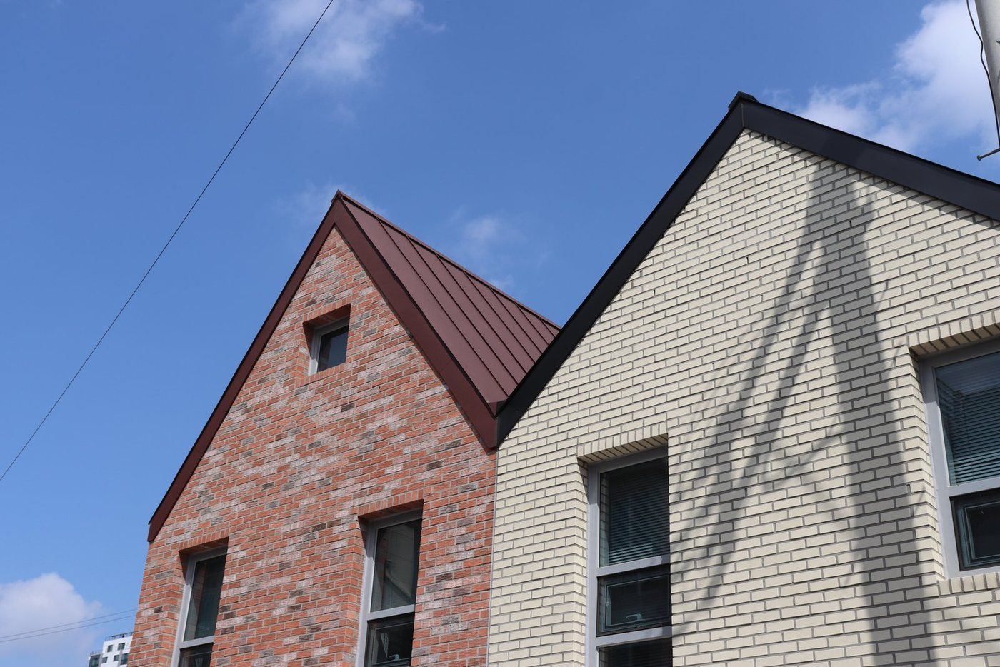
Contest decks
A resident brought the draft of a presentation for the village cooperative. I restructured and designed it so that it could be presented, and the cooperative won the grand prize at the Incheon Urban Regeneration Contest. I built the next deck as well, for a national best-practice competition hosted by the Ministry of Land, Infrastructure and Transport, where it took an excellence award, and I drafted the press release.
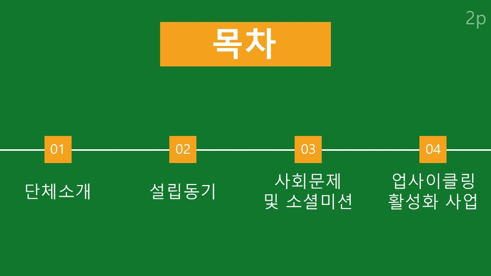
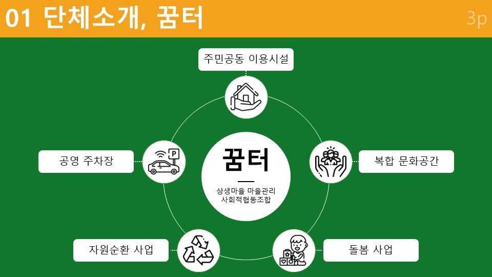
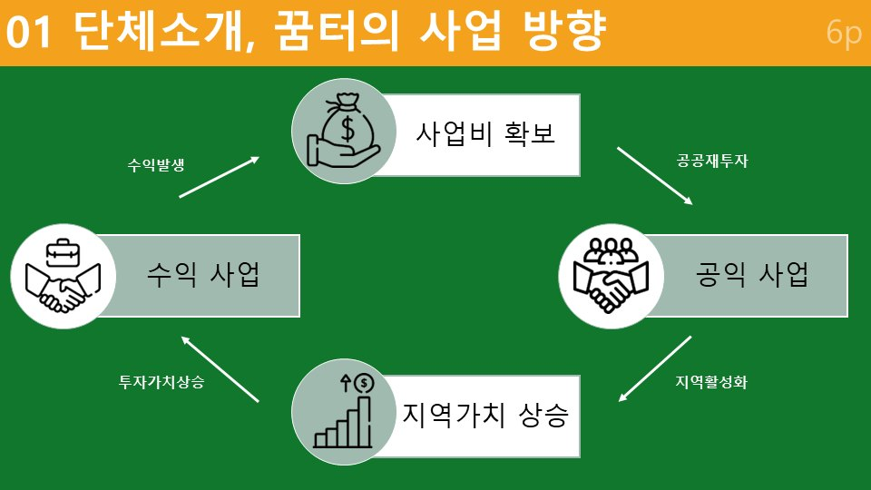
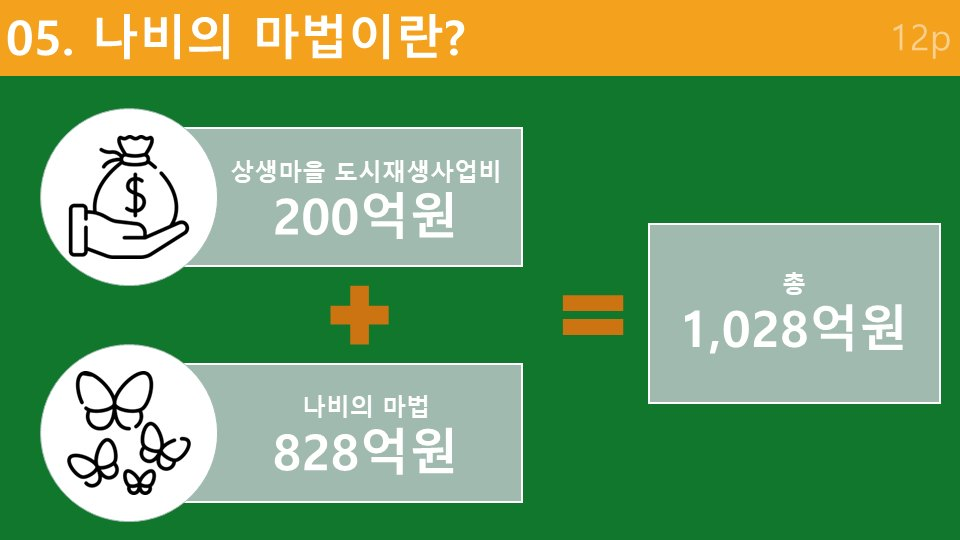
Bishkek, 2017
Five months at a vocational school in Kyrgyzstan with a five-person volunteer team from World Friends Korea. The school had no classes for us at first; the five of us built our own program and taught it, and I ran the classes in my own field. As publicity lead I made everything the team put out: posters, teaching materials, slides, card news, and the film that records the five months and took the top prize in the World Friends Korea youth volunteer contest.
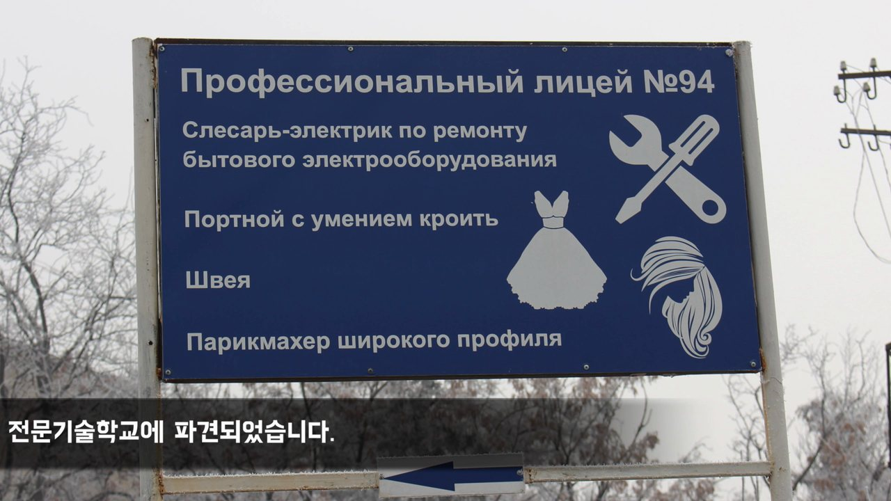
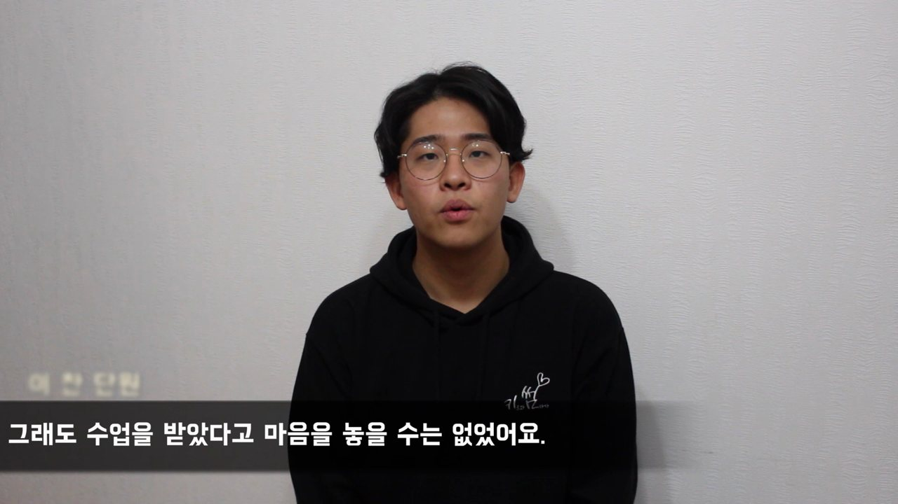
UnivExpo Seoul, 2016
With the Green Consumers Network’s Greenit team I planned and ran a program at UnivExpo Seoul, a two-day student festival on Yonsei-ro. It was named best program.
Documents and screens
Support center introduction deck


Contest deck for the residents’ cooperative


Posters and banners for the Seo-gu courses


Village record for the white paper, Incheon Seo-gu


Kir-wa Sseom-tada, frames
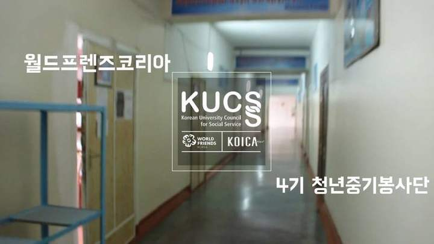
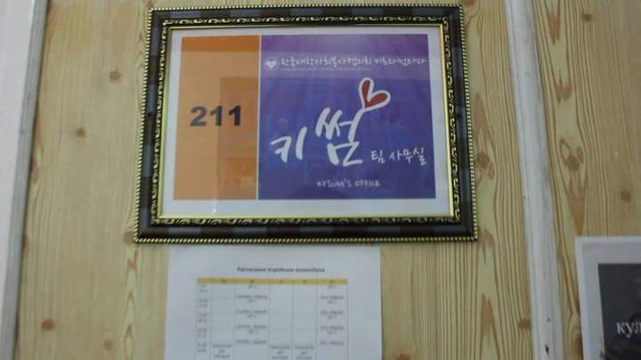
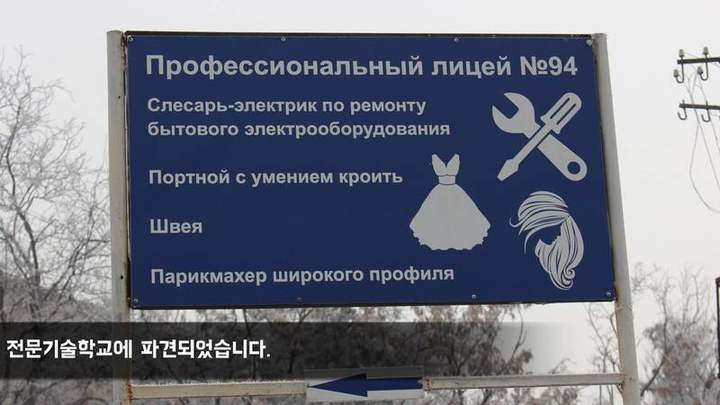
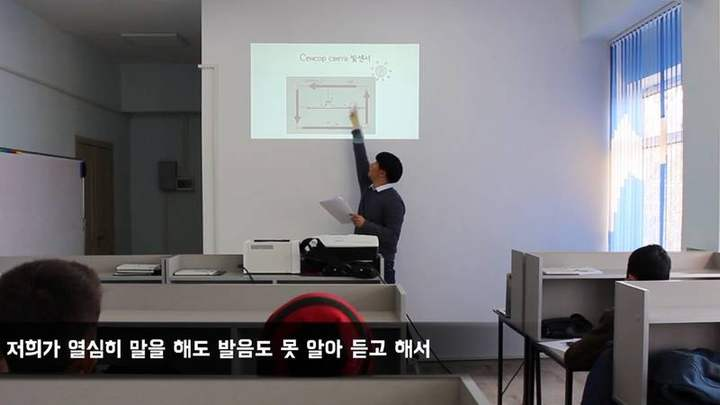
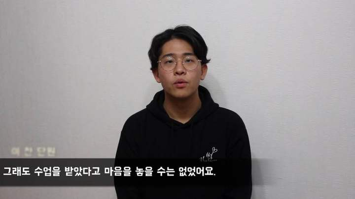